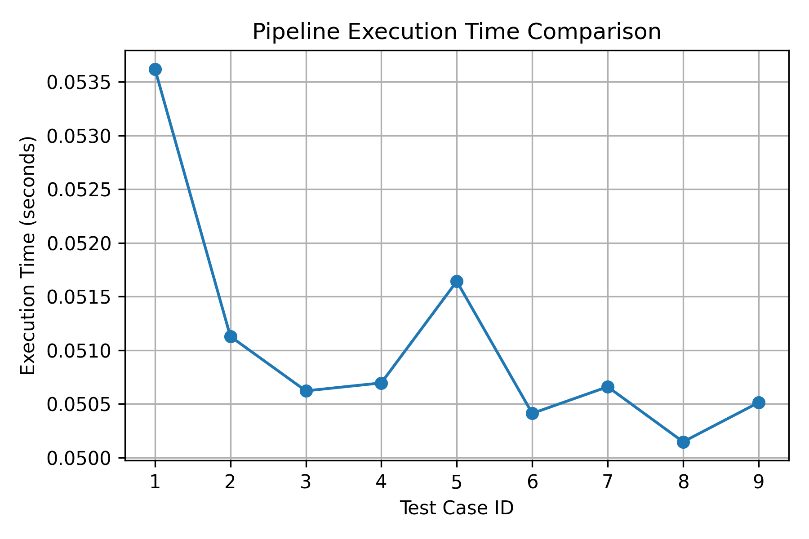
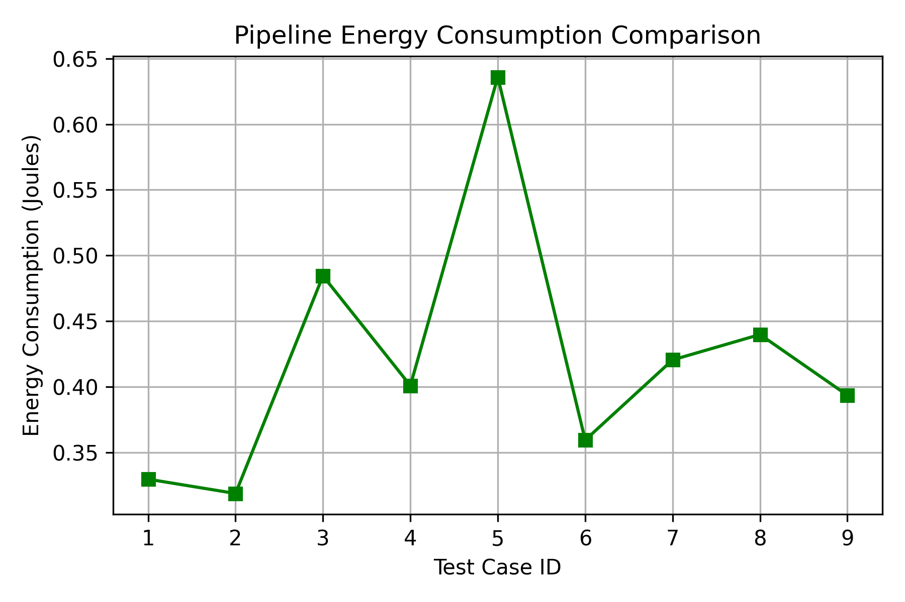
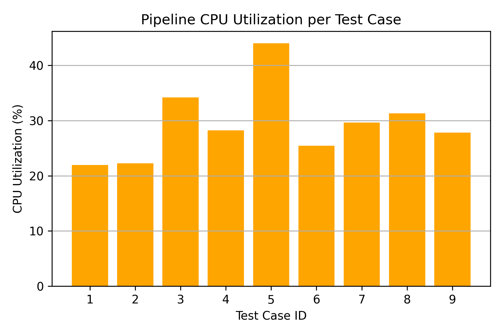
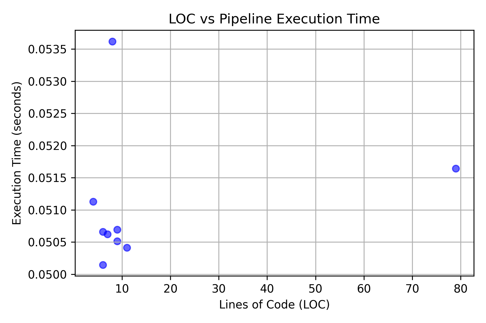
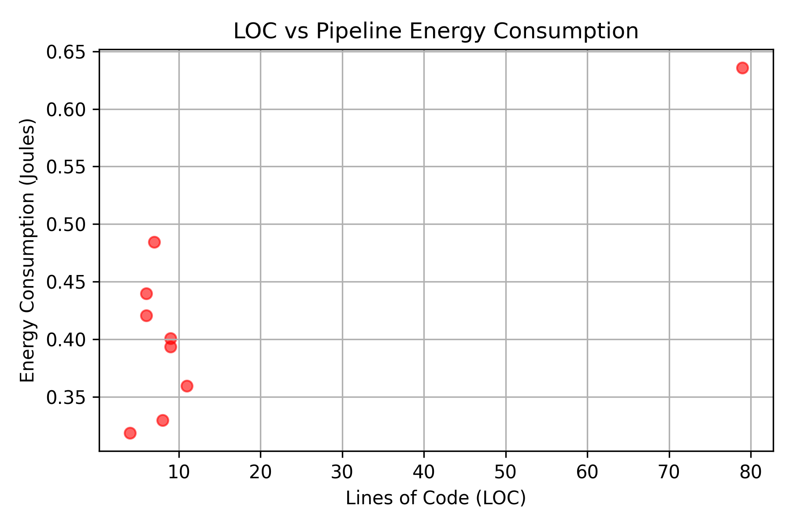

Metrics captured through the full internal system pipeline.

Analysis of pipeline duration across all test cases.

Energy footprint estimation calculated during pipeline processing.

Peak CPU consumption overhead for each test scenario.

Relationship between source code scale and processing latency.

Impact of code volume on environmental metrics (Energy/CO2).
| ID | File Name | LOC | Time (s) | CPU (%) | Energy (J) | Vulns | Status |
|---|---|---|---|---|---|---|---|
| 1 | array_bounds.c | 8 | 0.053621 | 21.95 | 0.32955646 | 2 | SUCCESS |
| 2 | missing_header.c | 4 | 0.051128 | 22.26 | 0.31866856 | 1 | SUCCESS |
| 3 | missing_semicolon.c | 7 | 0.050621 | 34.18 | 0.48446581 | 1 | SUCCESS |
| 4 | null_pointer.c | 9 | 0.050695 | 28.24 | 0.40085505 | 1 | SUCCESS |
| 5 | test1.c | 79 | 0.051642 | 43.98 | 0.63594539 | 21 | SUCCESS |
| 6 | test2.c | 11 | 0.050411 | 25.46 | 0.35936644 | 4 | SUCCESS |
| 7 | type_mismatch.c | 6 | 0.050659 | 29.64 | 0.42043264 | 1 | SUCCESS |
| 8 | undeclared_var.c | 6 | 0.050146 | 31.32 | 0.43976126 | 1 | SUCCESS |
| 9 | unsafe_buffer.c | 9 | 0.050512 | 27.82 | 0.39347072 | 3 | SUCCESS |